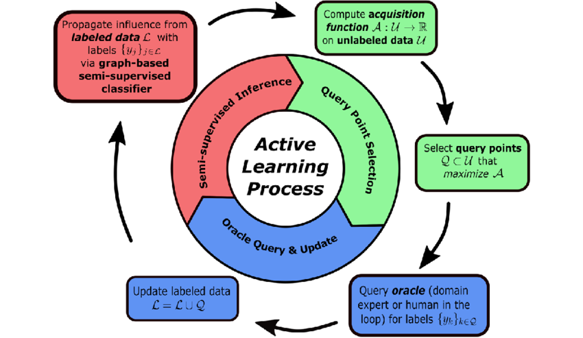
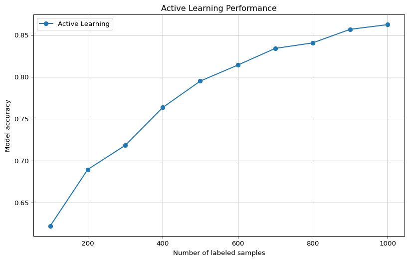

def least_confidence(model, unlabeled_pool, k):
# Predict probabilities for each sample in the unlabeled pool
probabilities = model.predict_proba(unlabeled_pool)
# Get the confidence values for the most probable class
confidences = np.max(probabilities, axis=1)
# Select the k samples with the lowest confidence
least_confident_indices = np.argsort(confidences)[:k]
return unlabeled_pool[least_confident_indices]Active Learning Influence Selection: A Comprehensive Guide

Introduction
Active learning is a machine learning paradigm where the algorithm can interactively query an oracle (typically a human annotator) to label new data points. The key idea is to select the most informative samples to be labeled, reducing the overall labeling effort while maintaining or improving model performance. This guide focuses on influence selection methods used in active learning strategies.
Table of Contents
Fundamentals of Active Learning
The Active Learning Loop
The typical active learning process follows these steps:
- Start with a small labeled dataset and a large unlabeled pool
- Train an initial model on the labeled data
- Apply an influence selection strategy to choose informative samples from the unlabeled pool
- Get annotations for the selected samples
- Add the newly labeled samples to the training set
- Retrain the model and repeat steps 3-6 until a stopping condition is met
Pool-Based vs. Stream-Based Learning
- Pool-based: The learner has access to a pool of unlabeled data and selects the most informative samples
- Stream-based: Samples arrive sequentially, and the learner must decide on-the-fly whether to request labels
Influence Selection Strategies
Influence selection is about identifying which unlabeled samples would be most beneficial to label next. Here are the main strategies:
Uncertainty-Based Methods
These methods select samples that the model is most uncertain about.
Least Confidence
Margin Sampling
Selects samples with the smallest margin between the two most likely classes:
def margin_sampling(model, unlabeled_pool, k):
# Predict probabilities for each sample in the unlabeled pool
probabilities = model.predict_proba(unlabeled_pool)
# Sort the probabilities in descending order
sorted_probs = np.sort(probabilities, axis=1)[:, ::-1]
# Calculate the margin between the first and second most probable classes
margins = sorted_probs[:, 0] - sorted_probs[:, 1]
# Select the k samples with the smallest margins
smallest_margin_indices = np.argsort(margins)[:k]
return unlabeled_pool[smallest_margin_indices]Entropy-Based Sampling
Selects samples with the highest predictive entropy:
def entropy_sampling(model, unlabeled_pool, k):
# Predict probabilities for each sample in the unlabeled pool
probabilities = model.predict_proba(unlabeled_pool)
# Calculate entropy for each sample
entropies = -np.sum(probabilities * np.log(probabilities + 1e-10), axis=1)
# Select the k samples with the highest entropy
highest_entropy_indices = np.argsort(entropies)[::-1][:k]
return unlabeled_pool[highest_entropy_indices]Bayesian Active Learning by Disagreement (BALD)
For Bayesian models, BALD selects samples that maximize the mutual information between predictions and model parameters:
def bald_sampling(bayesian_model, unlabeled_pool, k, n_samples=100):
# Get multiple predictions by sampling from the model's posterior
probs_samples = []
for _ in range(n_samples):
probs = bayesian_model.predict_proba(unlabeled_pool)
probs_samples.append(probs)
# Stack into a 3D array: (samples, data points, classes)
probs_samples = np.stack(probs_samples)
# Calculate the average probability across all samples
mean_probs = np.mean(probs_samples, axis=0)
# Calculate the entropy of the average prediction
entropy_mean = -np.sum(mean_probs * np.log(mean_probs + 1e-10), axis=1)
# Calculate the average entropy across all samples
entropy_samples = -np.sum(probs_samples * np.log(probs_samples + 1e-10), axis=2)
mean_entropy = np.mean(entropy_samples, axis=0)
# Mutual information = entropy of the mean - mean of entropies
bald_scores = entropy_mean - mean_entropy
# Select the k samples with the highest BALD scores
highest_bald_indices = np.argsort(bald_scores)[::-1][:k]
return unlabeled_pool[highest_bald_indices]Diversity-Based Methods
These methods aim to select a diverse set of examples to ensure broad coverage of the input space.
Clustering-Based Sampling
def clustering_based_sampling(unlabeled_pool, k, n_clusters=None):
if n_clusters is None:
n_clusters = k
# Apply K-means clustering
kmeans = KMeans(n_clusters=n_clusters)
kmeans.fit(unlabeled_pool)
# Get the cluster centers and distances to each point
centers = kmeans.cluster_centers_
distances = kmeans.transform(unlabeled_pool) # Distance to each cluster center
# Select one sample from each cluster (closest to the center)
selected_indices = []
for i in range(n_clusters):
# Get the samples in this cluster
cluster_samples = np.where(kmeans.labels_ == i)[0]
# Find the sample closest to the center
closest_sample = cluster_samples[np.argmin(distances[cluster_samples, i])]
selected_indices.append(closest_sample)
# If we need more samples than clusters, fill with the most uncertain samples
if k > n_clusters:
# Implementation depends on uncertainty measure
pass
return unlabeled_pool[selected_indices[:k]]Core-Set Approach
The core-set approach aims to select a subset of data that best represents the whole dataset:
def core_set_sampling(labeled_pool, unlabeled_pool, k):
# Combine labeled and unlabeled data for distance calculations
all_data = np.vstack((labeled_pool, unlabeled_pool))
# Compute pairwise distances
distances = pairwise_distances(all_data)
# Split distances into labeled-unlabeled and unlabeled-unlabeled
n_labeled = labeled_pool.shape[0]
dist_labeled_unlabeled = distances[:n_labeled, n_labeled:]
# For each unlabeled sample, find the minimum distance to any labeled sample
min_distances = np.min(dist_labeled_unlabeled, axis=0)
# Select the k samples with the largest minimum distances
farthest_indices = np.argsort(min_distances)[::-1][:k]
return unlabeled_pool[farthest_indices]Expected Model Change
The Expected Model Change (EMC) method selects samples that would cause the greatest change in the model if they were labeled:
def expected_model_change(model, unlabeled_pool, k):
# Predict probabilities for each sample in the unlabeled pool
probabilities = model.predict_proba(unlabeled_pool)
n_classes = probabilities.shape[1]
# Calculate expected gradient length for each sample
expected_changes = []
for i, x in enumerate(unlabeled_pool):
# Calculate expected gradient length across all possible labels
change = 0
for c in range(n_classes):
# For each possible class, calculate the gradient if this was the true label
x_expanded = x.reshape(1, -1)
# Here we would compute the gradient of the model with respect to the sample
# For simplicity, we use a placeholder
gradient = compute_gradient(model, x_expanded, c)
norm_gradient = np.linalg.norm(gradient)
# Weight by the probability of this class
change += probabilities[i, c] * norm_gradient
expected_changes.append(change)
# Select the k samples with the highest expected change
highest_change_indices = np.argsort(expected_changes)[::-1][:k]
return unlabeled_pool[highest_change_indices]Note: The compute_gradient function would need to be implemented based on the specific model being used.
Expected Error Reduction
The Expected Error Reduction method selects samples that, when labeled, would minimally reduce the model’s expected error:
def expected_error_reduction(model, unlabeled_pool, unlabeled_pool_remaining, k):
# Predict probabilities for all remaining unlabeled data
current_probs = model.predict_proba(unlabeled_pool_remaining)
current_entropy = -np.sum(current_probs * np.log(current_probs + 1e-10), axis=1)
expected_error_reductions = []
# For each sample in the unlabeled pool we're considering
for i, x in enumerate(unlabeled_pool):
# Predict probabilities for this sample
probs = model.predict_proba(x.reshape(1, -1))[0]
# Calculate the expected error reduction for each possible label
error_reduction = 0
for c in range(len(probs)):
# Create a hypothetical new model with this labeled sample
# For simplicity, we use a placeholder function
hypothetical_model = train_with_additional_sample(model, x, c)
# Get new probabilities with this model
new_probs = hypothetical_model.predict_proba(unlabeled_pool_remaining)
new_entropy = -np.sum(new_probs * np.log(new_probs + 1e-10), axis=1)
# Expected entropy reduction
reduction = np.sum(current_entropy - new_entropy)
# Weight by the probability of this class
error_reduction += probs[c] * reduction
expected_error_reductions.append(error_reduction)
# Select the k samples with the highest expected error reduction
highest_reduction_indices = np.argsort(expected_error_reductions)[::-1][:k]
return unlabeled_pool[highest_reduction_indices]Note: The train_with_additional_sample function would need to be implemented based on the specific model being used.
Influence Functions
Influence functions approximate the effect of adding or removing a training example without retraining the model:
def influence_function_sampling(model, unlabeled_pool, labeled_pool, k, labels):
influences = []
# For each unlabeled sample
for x_u in unlabeled_pool:
# Calculate the influence of adding this sample to the training set
influence = calculate_influence(model, x_u, labeled_pool, labels)
influences.append(influence)
# Select the k samples with the highest influence
highest_influence_indices = np.argsort(influences)[::-1][:k]
return unlabeled_pool[highest_influence_indices]Note: The calculate_influence function would need to be implemented based on the specific model and influence metric being used.
Query-by-Committee
Query-by-Committee (QBC) methods train multiple models (a committee) and select samples where they disagree:
def query_by_committee(committee_models, unlabeled_pool, k):
# Get predictions from all committee members
all_predictions = []
for model in committee_models:
preds = model.predict(unlabeled_pool)
all_predictions.append(preds)
# Stack predictions into a 2D array (committee members, data points)
all_predictions = np.stack(all_predictions)
# Calculate disagreement (e.g., using vote entropy)
disagreements = []
for i in range(unlabeled_pool.shape[0]):
# Count votes for each class
votes = np.bincount(all_predictions[:, i])
# Normalize to get probabilities
vote_probs = votes / len(committee_models)
# Calculate entropy
entropy = -np.sum(vote_probs * np.log2(vote_probs + 1e-10))
disagreements.append(entropy)
# Select the k samples with the highest disagreement
highest_disagreement_indices = np.argsort(disagreements)[::-1][:k]
return unlabeled_pool[highest_disagreement_indices]Implementation Considerations
Batch Mode Active Learning
In practice, it’s often more efficient to select multiple samples at once. However, simply selecting the top-k samples may lead to redundancy. Consider using:
- Greedy Selection with Diversity: Select one sample at a time, then update the diversity metrics to avoid selecting similar samples.
def batch_selection_with_diversity(model, unlabeled_pool, k, lambda_diversity=0.5):
selected_indices = []
remaining_indices = list(range(len(unlabeled_pool)))
# Calculate uncertainty scores for all samples
probabilities = model.predict_proba(unlabeled_pool)
entropies = -np.sum(probabilities * np.log(probabilities + 1e-10), axis=1)
# Calculate distance matrix for diversity
distance_matrix = pairwise_distances(unlabeled_pool)
for _ in range(k):
if not remaining_indices:
break
scores = np.zeros(len(remaining_indices))
# Calculate uncertainty scores
uncertainty_scores = entropies[remaining_indices]
# Calculate diversity scores (if we have already selected some samples)
if selected_indices:
# For each remaining sample, calculate the minimum distance to any selected sample
diversity_scores = np.min(distance_matrix[remaining_indices][:, selected_indices], axis=1)
else:
diversity_scores = np.zeros(len(remaining_indices))
# Normalize scores
uncertainty_scores = (uncertainty_scores - np.min(uncertainty_scores)) / (np.max(uncertainty_scores) - np.min(uncertainty_scores) + 1e-10)
if selected_indices:
diversity_scores = (diversity_scores - np.min(diversity_scores)) / (np.max(diversity_scores) - np.min(diversity_scores) + 1e-10)
# Combine scores
scores = (1 - lambda_diversity) * uncertainty_scores + lambda_diversity * diversity_scores
# Select the sample with the highest score
best_idx = np.argmax(scores)
selected_idx = remaining_indices[best_idx]
# Add to selected and remove from remaining
selected_indices.append(selected_idx)
remaining_indices.remove(selected_idx)
return unlabeled_pool[selected_indices]- Submodular Function Maximization: Use a submodular function to ensure diversity in the selected batch.
Handling Imbalanced Data
Active learning can inadvertently reinforce class imbalance. Consider:
- Stratified Sampling: Ensure representation from all classes.
- Hybrid Approaches: Combine uncertainty-based and density-based methods.
- Diversity Constraints: Explicitly enforce diversity in feature space.
Computational Efficiency
Some methods (like expected error reduction) can be computationally expensive. Consider:
- Subsample the Unlabeled Pool: Only consider a random subset for selection.
- Pre-compute Embeddings: Use a fixed feature extractor to pre-compute embeddings.
- Approximate Methods: Use approximations for expensive operations.
Evaluation Metrics
Learning Curves
Plot model performance vs. number of labeled samples:
def plot_learning_curve(model_factory, X_train, y_train, X_test, y_test,
active_learning_strategy, initial_size=10,
batch_size=10, n_iterations=20):
# Initialize with a small labeled set
labeled_indices = np.random.choice(len(X_train), initial_size, replace=False)
unlabeled_indices = np.setdiff1d(np.arange(len(X_train)), labeled_indices)
performance = []
for i in range(n_iterations):
# Create a fresh model
model = model_factory()
# Train on the currently labeled data
model.fit(X_train[labeled_indices], y_train[labeled_indices])
# Evaluate on the test set
score = model.score(X_test, y_test)
performance.append((len(labeled_indices), score))
# Select the next batch of samples
if len(unlabeled_indices) > 0:
# Use the specified active learning strategy
selected_indices = active_learning_strategy(
model, X_train[unlabeled_indices], batch_size
)
# Map back to original indices
selected_original_indices = unlabeled_indices[selected_indices]
# Update labeled and unlabeled indices
labeled_indices = np.append(labeled_indices, selected_original_indices)
unlabeled_indices = np.setdiff1d(unlabeled_indices, selected_original_indices)
# Plot the learning curve
counts, scores = zip(*performance)
plt.figure(figsize=(10, 6))
plt.plot(counts, scores, 'o-')
plt.xlabel('Number of labeled samples')
plt.ylabel('Model accuracy')
plt.title('Active Learning Performance')
plt.grid(True)
return performanceComparison with Random Sampling
Always compare your active learning strategy with random sampling as a baseline.
Annotation Efficiency
Calculate how many annotations you saved compared to using the entire dataset.
Practical Examples
Image Classification with Uncertainty Sampling
import numpy as np
from sklearn.datasets import fetch_openml
from sklearn.ensemble import RandomForestClassifier
from sklearn.metrics import accuracy_score
from sklearn.model_selection import train_test_split
import matplotlib.pyplot as plt
# Load data
mnist = fetch_openml('mnist_784', version=1, cache=True)
X, y = mnist['data'], mnist['target']
# Split into train and test
X_train, X_test, y_train, y_test = train_test_split(
X, y, test_size=0.2, random_state=42
)
# Initially, only a small portion is labeled
initial_size = 100
labeled_indices = np.random.choice(len(X_train), initial_size, replace=False)
unlabeled_indices = np.setdiff1d(np.arange(len(X_train)), labeled_indices)
# Tracking performance
active_learning_performance = []
random_sampling_performance = []
# Active learning loop
for i in range(10): # 10 iterations
# Train a model on the currently labeled data
model = RandomForestClassifier(n_estimators=50, random_state=42)
model.fit(X_train.iloc[labeled_indices], y_train.iloc[labeled_indices])
# Evaluate on the test set
y_pred = model.predict(X_test)
accuracy = accuracy_score(y_test, y_pred)
active_learning_performance.append((len(labeled_indices), accuracy))
print(f"Iteration {i+1}: {len(labeled_indices)} labeled samples, "
f"accuracy: {accuracy:.4f}")
# Select 100 new samples using entropy sampling
if len(unlabeled_indices) > 0:
# Predict probabilities for each unlabeled sample
probs = model.predict_proba(X_train.iloc[unlabeled_indices])
# Calculate entropy
entropies = -np.sum(probs * np.log(probs + 1e-10), axis=1)
# Select samples with the highest entropy
top_indices = np.argsort(entropies)[::-1][:100]
# Update labeled and unlabeled indices
selected_indices = unlabeled_indices[top_indices]
labeled_indices = np.append(labeled_indices, selected_indices)
unlabeled_indices = np.setdiff1d(unlabeled_indices, selected_indices)
# Plot learning curve
counts, scores = zip(*active_learning_performance)
plt.figure(figsize=(10, 6))
plt.plot(counts, scores, 'o-', label='Active Learning')
plt.xlabel('Number of labeled samples')
plt.ylabel('Model accuracy')
plt.title('Active Learning Performance')
plt.grid(True)
plt.legend()
plt.show()Iteration 1: 100 labeled samples, accuracy: 0.6410
Iteration 2: 200 labeled samples, accuracy: 0.6991
Iteration 3: 300 labeled samples, accuracy: 0.7400
Iteration 4: 400 labeled samples, accuracy: 0.7814
Iteration 5: 500 labeled samples, accuracy: 0.8070
Iteration 6: 600 labeled samples, accuracy: 0.8319
Iteration 7: 700 labeled samples, accuracy: 0.8449
Iteration 8: 800 labeled samples, accuracy: 0.8444
Iteration 9: 900 labeled samples, accuracy: 0.8779
Iteration 10: 1000 labeled samples, accuracy: 0.8772
Text Classification with Query-by-Committee
from sklearn.feature_extraction.text import TfidfVectorizer
from sklearn.naive_bayes import MultinomialNB
from sklearn.svm import SVC
from sklearn.ensemble import VotingClassifier
from sklearn.datasets import fetch_20newsgroups
# Load data
categories = ['alt.atheism', 'soc.religion.christian', 'comp.graphics', 'sci.med']
twenty_train = fetch_20newsgroups(subset='train', categories=categories, shuffle=True, random_state=42)
twenty_test = fetch_20newsgroups(subset='test', categories=categories, shuffle=True, random_state=42)
# Feature extraction
vectorizer = TfidfVectorizer(stop_words='english')
X_train = vectorizer.fit_transform(twenty_train.data)
X_test = vectorizer.transform(twenty_test.data)
y_train = twenty_train.target
y_test = twenty_test.target
# Initially, only a small portion is labeled
initial_size = 20
labeled_indices = np.random.choice(len(X_train.toarray()), initial_size, replace=False)
unlabeled_indices = np.setdiff1d(np.arange(len(X_train.toarray())), labeled_indices)
# Create a committee of models
models = [
('nb', MultinomialNB()),
('svm', SVC(kernel='linear', probability=True)),
('svm2', SVC(kernel='rbf', probability=True))
]
# Active learning loop
for i in range(10): # 10 iterations
# Train each model on the currently labeled data
committee_models = []
for name, model in models:
model.fit(X_train[labeled_indices], y_train[labeled_indices])
committee_models.append(model)
# Evaluate using the VotingClassifier
voting_clf = VotingClassifier(estimators=models, voting='soft')
voting_clf.fit(X_train[labeled_indices], y_train[labeled_indices])
accuracy = voting_clf.score(X_test, y_test)
print(f"Iteration {i+1}: {len(labeled_indices)} labeled samples, "
f"accuracy: {accuracy:.4f}")
# Select 10 new samples using Query-by-Committee
if len(unlabeled_indices) > 0:
# Get predictions from all committee members
all_predictions = []
for model in committee_models:
preds = model.predict(X_train[unlabeled_indices])
all_predictions.append(preds)
# Calculate vote entropy
vote_entropies = []
all_predictions = np.array(all_predictions)
for i in range(len(unlabeled_indices)):
# Count votes for each class
votes = np.bincount(all_predictions[:, i], minlength=len(categories))
# Normalize to get probabilities
vote_probs = votes / len(committee_models)
# Calculate entropy
entropy = -np.sum(vote_probs * np.log2(vote_probs + 1e-10))
vote_entropies.append(entropy)
# Select samples with the highest vote entropy
top_indices = np.argsort(vote_entropies)[::-1][:10]
# Update labeled and unlabeled indices
selected_indices = unlabeled_indices[top_indices]
labeled_indices = np.append(labeled_indices, selected_indices)
unlabeled_indices = np.setdiff1d(unlabeled_indices, selected_indices)Iteration 1: 20 labeled samples, accuracy: 0.2124
Iteration 2: 30 labeled samples, accuracy: 0.2690
Iteration 3: 40 labeled samples, accuracy: 0.3662
Iteration 4: 50 labeled samples, accuracy: 0.5346
Iteration 5: 60 labeled samples, accuracy: 0.5067
Iteration 6: 70 labeled samples, accuracy: 0.5486
Iteration 7: 80 labeled samples, accuracy: 0.6079
Iteration 8: 90 labeled samples, accuracy: 0.5859
Iteration 9: 100 labeled samples, accuracy: 0.7450
Iteration 10: 110 labeled samples, accuracy: 0.7450Advanced Topics
Transfer Learning with Active Learning
Combining transfer learning with active learning can be powerful:
- Use pre-trained models as feature extractors.
- Apply active learning on the feature space.
- Fine-tune the model on the selected samples.
Active Learning with Deep Learning
Special considerations for deep learning models:
- Uncertainty Estimation: Use dropout or ensemble methods for better uncertainty estimation.
- Batch Normalization: Be careful with batch normalization layers when retraining.
- Data Augmentation: Apply data augmentation to increase the effective size of the labeled pool.
import torch
import torch.nn as nn
import torch.nn.functional as F
from torch.utils.data import DataLoader, Subset
import torchvision.transforms as transforms
import torchvision.datasets as datasets
# Define a simple CNN
class SimpleCNN(nn.Module):
def __init__(self):
super(SimpleCNN, self).__init__()
self.conv1 = nn.Conv2d(1, 32, 3, 1)
self.conv2 = nn.Conv2d(32, 64, 3, 1)
self.dropout1 = nn.Dropout2d(0.25)
self.dropout2 = nn.Dropout2d(0.5)
self.fc1 = nn.Linear(9216, 128)
self.fc2 = nn.Linear(128, 10)
def forward(self, x, dropout=True):
x = self.conv1(x)
x = F.relu(x)
x = self.conv2(x)
x = F.relu(x)
x = F.max_pool2d(x, 2)
if dropout:
x = self.dropout1(x)
x = torch.flatten(x, 1)
x = self.fc1(x)
x = F.relu(x)
if dropout:
x = self.dropout2(x)
x = self.fc2(x)
return x
# MC Dropout for uncertainty estimation
def mc_dropout_uncertainty(model, data_loader, n_samples=10):
model.eval()
all_probs = []
with torch.no_grad():
for _ in range(n_samples):
batch_probs = []
for data, _ in data_loader:
output = model(data, dropout=True)
probs = F.softmax(output, dim=1)
batch_probs.append(probs)
# Concatenate batch probabilities
all_probs.append(torch.cat(batch_probs))
# Stack along a new dimension
all_probs = torch.stack(all_probs)
# Calculate the mean probabilities
mean_probs = torch.mean(all_probs, dim=0)
# Calculate entropy of the mean prediction
entropy = -torch.sum(mean_probs * torch.log(mean_probs + 1e-10), dim=1)
return entropy.numpy()Semi-Supervised Active Learning
Leverage both labeled and unlabeled data during training:
- Self-Training: Use model predictions on unlabeled data as pseudo-labels.
- Co-Training: Train multiple models and use their predictions to teach each other.
- Consistency Regularization: Enforce consistent predictions across different perturbations.
def semi_supervised_active_learning(labeled_X, labeled_y, unlabeled_X, model, confidence_threshold=0.95):
# Train model on labeled data
model.fit(labeled_X, labeled_y)
# Predict on unlabeled data
probabilities = model.predict_proba(unlabeled_X)
max_probs = np.max(probabilities, axis=1)
# Get high confidence predictions
confident_indices = np.where(max_probs >= confidence_threshold)[0]
# Get pseudo-labels for confident predictions
pseudo_labels = model.predict(unlabeled_X[confident_indices])
# Train on combined dataset
combined_X = np.vstack([labeled_X, unlabeled_X[confident_indices]])
combined_y = np.concatenate([labeled_y, pseudo_labels])
model.fit(combined_X, combined_y)
return model, confident_indicesActive Learning for Domain Adaptation
When labeled data from the target domain is scarce, active learning can help select the most informative samples:
- Domain Discrepancy Measures: Select samples that minimize domain discrepancy.
- Adversarial Selection: Select samples that the domain discriminator is most uncertain about.
- Feature Space Alignment: Select samples that help align feature spaces between domains.
Human-in-the-Loop Considerations
- Annotation Interface Design: Make the annotation process intuitive and efficient.
- Cognitive Load Management: Group similar samples to reduce cognitive switching.
- Explanations: Provide model explanations to help annotators understand the current model’s decisions.
- Quality Control: Incorporate mechanisms to detect and correct annotation errors.
Conclusion
Active learning provides a powerful framework for efficiently building machine learning models with limited labeled data. By selecting the most informative samples for annotation, active learning can significantly reduce the labeling effort while maintaining high model performance.
The key to successful active learning is choosing the right influence selection strategy for your specific problem and data characteristics. Consider the following when designing your active learning pipeline:
- Data Characteristics: Dense vs. sparse data, balanced vs. imbalanced classes, feature distribution.
- Model Type: Linear models, tree-based models, deep learning models.
- Computational Resources: Available memory and processing power.
- Annotation Budget: Number of samples that can be labeled.
- Task Complexity: Classification vs. regression, number of classes, difficulty of the task.
By carefully considering these factors and implementing the appropriate influence selection methods, you can build high-performance models with minimal annotation effort.